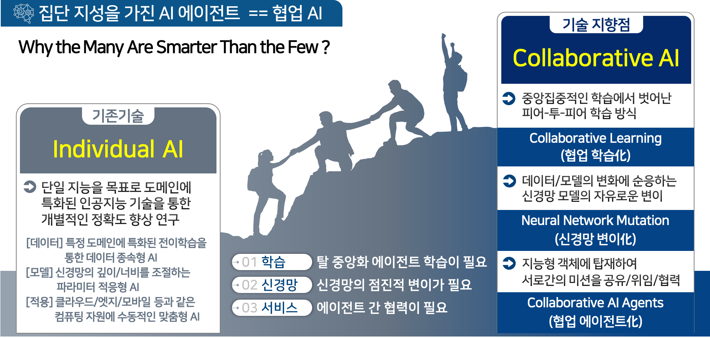
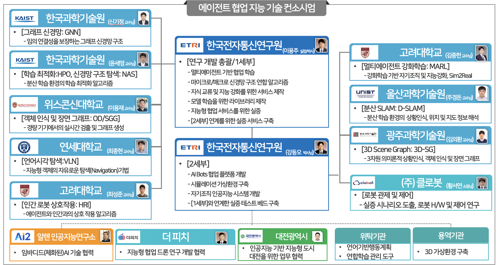

총괄: 인공지능 자율성장을 위한 멀티 에이전트 기반 복합지능 강화 기술 개발


(1세부) 인공지능 에이전트 협업기반 신경망 변이 및 지능 강화 기술 개발

(2세부) AI Bots 협업 플랫폼 및 자기조직 인공지능 기술 개발

연구실적(논문/학술대회)
[International Journals]
- Fanchen Bu, Shinhwan Kang, Kijung Shin, "Interplay between topology and edge weights in real‐world graphs: concepts, patterns, and an algorithm", Data Mining and Knowledge Discovery
- Sunwoo Kim, Minyoung Choe, Jaemin Yoo, Kijung Shin, "Reciprocity in directed hypergraphs: measures, findings, and generators", Data Mining and Knowledge Discovery
- Manh Tuan Do, Kijung Shin, "Improving the core resilience of real‐world hypergraphs", Data Mining and Knowledge Discovery
- Fanchen Bu, Geon Lee, Kijung Shin, "Hypercore decomposition for non‐fragile hyperedges: concepts, algorithms, observations, and applications", Data Mining and Knowledge Discovery
- Ji-Wung Han, Soyeon Bak, Jun-Mo Kim, WooHyeok Choi, Dong-Hee Shin, Young-Han Son, Tae-Eui Kam, "META-EEG: Meta-learning-based class-relevant EEG representation learning for zero-calibration brain-computer interfaces", Expert Systems With Applications
[International Conferences]
- Minh-Long Luu, Zeyi Huang ,Eric P. Xing, Yong Jae Lee, Haohan Wang, "Expeditious Saliency-guided Mix-up through Random Gradient Thresholding", AAAI 2023
- Sumyeong Ahn, Se-Young Yun, "Denoising after Entropy-based DebiasingRobust Training Method for Dataset Bias with Noisy Labels", AAAI 2023
- Suvaansh Bhambri, Byeonghwi Kim, Jonghyun Choi, "Multi-level Compositional Reasoning for Interactive Instruction Following", AAAI 2023
- Hyunseo Koh, Minhyuk Seo, Jihwan Bang, Hwanjun Song, Deokki Hong, Seulki Park, Jung-Woo Ha, Jonghyun Choi, "ONLINE BOUNDARY-FREE CONTINUAL LEARNING BY SCHEDULED DATA PRIOR", ICLR 2023
- Sumyeong Ahn, Jongwoo Ko, Se-Young Yun, "CUDA: CURRICULUM OF DATA AUGMENTATION FOR LONG-TAILED RECOGNITION", ICLR 2023
- Jongwoo Ko, Sumyeong Ahn, Se-Young Yun, "EFFICIENT UTILIZATION OF PRE-TRAINED MODEL FOR LEARNING WITH NOISY LABELS", ICLR 2023
- Yuheng Li, Haotian Liu, Qingyang Wu, Fangzhou Mu, Jianwei Yang, Jianfeng Gao, Chunyuan Li, Yong Jae Lee, "GLIGEN: Open-Set Grounded Text-to-Image Generation", CVPR 2023
- Xueyan Zou, Zi-Yi Dou, Jianwei Yang, Zhe Gan, Linjie Li, Chunyuan Li, Xiyang Dai, Harkirat Behl, Jianfeng Wang, Lu Yuan, Nanyun Peng, Lijuan Wang, Yong Jae Lee, Jianfeng Gao, "Generalized Decoding for Pixel, Image, and Language" , CVPR 2023
- Haotian Liu, Kilho Son, Jianwei Yang, Ce Liu, Jianfeng Gao, Yong Jae Lee, Chunyuan Li, "Learning Customized Visual Models with Retrieval-Augmented Knowledge", CVPR 2023
- Sungnyun Kim, Sangmin Bae, Se-Young Yun, "Coreset Sampling from Open-Set for Fine-Grained Self-Supervised Learning", CVPR 2023
- SangMook Kim, Sangmin Bae, Hwanjun Song, Se-Young Yun, "Re-thinking Federated Active Learning based on Inter-class Diversity", CVPR 2023
- Soo Yong Lee, Fanchen Bu, Jaemin Yoo, Kijung Shin, Towards Deep Attention in Graph Neural Networks: Problems and Remedies", ICML 2023
- Daechul Ahn, Daneul Kim, Gwangmo Song, Seung Hwan Kim, Honglak Lee, Dongyeop Kang, Jonghyun Choi, "Story Visualization by Online Text Augmentation with Context Memory", ICCV 2023
- Byeonghwi Kim ,Jinyeon Kim, Yuyeong Kim, Cheolhong Min, Jonghyun Choi, "Context-Aware Planning and Environment-Aware Memory for Instruction Following Embodied Agents", ICCV 2023
- Zeyi Huang, Andy Zhou, Zijian Lin, Mu Cai, Haohan Wang, Yong Jae Lee, "A Sentence Speaks a Thousand Images:Generalization through Distilling CLIP with Language Guidance", ICCV 2023
- Haotian Liu, Chunyuan Li, Qingyang Wu,Yong Jae Lee, "Visual Instruction Tuning", NeurIPS 2023
- Xueyan Zou,Jianwei Yang,Hao Zhang,Feng Li,Linjie Li,Jianfeng Wang,Lijuan Wang,Jianfeng Gao,Yong Jae Lee, "Segment Everything Everywhere All at Once", NeurIPS 2023
- Utkarsh Ojha, Yuheng Li, Anirudh Sundara Rajan,Yingyu Liang, Yong Jae Lee, "What Knowledge Gets Distilled in Knowledge Distillation?", NerIPS 2023
- Sunwoo Kim, Fanchen Bu, Minyoung Choe, Jaemin Yoo, Kijung Shin, "How Transitive Are Real-World Group Interactions? - Measurement and Reproduction", KDD 2023
- Fanchen Bu, Kijung Shin, "On Improving the Cohesiveness of Graphs by Merging Nodes:Formulation, Analysis, and Algorithms", KDD 2023
- Hyunju Kim, Jihoon Ko, Fanchen Bu, Kijung Shin, "Characterization of Simplicial Complexes by Counting Simplets Beyond Four Nodes", WWW 2023
- Hyeonsoo Jo, Fanchen Bu, Kijung Shin, "Robust Graph Clustering via Meta Weighting for Noisy Graphs", CIKM 2023
- Seungyoun Shin, Joonhyung Lee, Junhyug Noh, and Sungjoon Choi, "Robust Detection for Autonomous Elevator Boarding using a Mobile Manipulator", ACPR 2023
- Seungyoun Shin, Wonho Bae, Junhyug Noh, and Sungjoon Choi, "Towards Explainable Computer Vision Methods via Uncertainty Activation Map", ACPR 2023
- Dahyun Kim, Yong-Ju Lee, “Improving Embodied Instruction Following with Deterministic Methods”, ICACT 2023
- SangMook Kim, SangMin Bae, Se-Young Yun, Hwanjun Song, “LG-FAL : Federated Active Learning Strategy using Local and Global Models”, ICML 2022
- SangMook Kim, Wonyoung Shin, Soohyuk Jang, Hwanjun Song, Se-Young Yun, “FedRN: Exploiting k-Reliable Neighbors Towards Robust Federated Learning”, CIKM 2022
- Jaehoon Oh, Sungnyun Kim, Namgyu Ho, Jin-Hwa Kim, Hwanjun Son, Se-Young Yun, “Understanding Cross-Domain Few-Shot Learning Based on Domain Similarity and Few-Shot Difficulty”, NeurIPS 2022
- Chunyuan Li, Haotian Liu, Liunian Harold Li, Pengchuan Zhang, Jyoti Aneja, Jianwei Yang, Ping Jin, Houdong Hu, Zicheng Liu, Yong Jae Lee, Jianfeng Gao, “ELEVATER: A Benchmark and Toolkit for Evaluating Language-Augmented Visual Models”, NeurIPS 2022,
- Curie Kim, “Self-Supervised 3D Object Detection from Monocular Pseudo-LiDAR”, MFI 2022
[Domestic Journals]
- 강동오 외 4인, "AI Bots를 위한 멀티에이전트 협업 기술 동향", 전자통신동향분석, 2022.12
[Domestic Conferences]
- 최부광, 전상훈, 이용주, "VLM을 활용한 이미지 캡셔닝 연구 동향", 한국컴퓨터종합학술대회 2023
- 최민규, 전상훈, 이용주, "객체탐지 모듈에 따른 장면그래프 생성 모델 비교 연구", 한국컴퓨터종합학술대회 2023
- 윤준학, 전상훈, 이용주, "다중 에이전트 협력학습 응용을 위한 적응적 접근법을 이용한 분산신경망 최적화 연구", 한국정보처리학회 학술대회 2023
- 김상묵, 배상민, 엄성하, 윤세영, “연합학습에서 클래스 균형을 고려한 디바이스 스케줄링 알고리즘”, 한국컴퓨터종합학술대회 2022, pp. 846-848, 2022.
- 이정현, 정민찬, 허남규, 윤세영, “그래프 신경망의 확률적 경사 소음의 통계적 분석”, 한국컴퓨터종합학술대회 2022, pp. 1025-1027, 2022.
- 손석빈, “자율주행에서 사용되는 CAN 통신 기술에서의 스푸핑 보안 위협”, 한국통신학회, 2022.
- 손석빈, “자율주행에서 사용되는 LiDAR 기술에서의 스푸핑 보안 위협”, 한국통신학회, 2022.
- 유민재, “심층강화학습을 이용한 자율주행 기술 및 시뮬레이터 동향”, 한국통신학회, 2022.
- 김중헌, Stable Marriage 알고리즘에 기반한 드론택시 승객 스케쥴링 기법”, 한국통신학회, 2022.
- 김중헌, 강화학습 기반 UAV 스케줄링 및 자원 관리 기술 동향”, 한국통신학회, 2022.
[Promotions]
- Workshop on Computer Vision in the Wild, ECCV 2022,[Link]
[Open SW]
- ELEVATER(Evaluation of Language-augmented Visual Task-level Transfer) ,[Link]
Acknowledgement
This work was supported by Institute for Information &
Communications Technology Promotion (IITP) grant funded
by the Korea government (MSIT) [No.2022-0-00871, Development of AI Autonomy and Knowledge Enhancement for AI Agent Collaboration], [No.2022-0-00907, Development of AI Bots Collaboration Platform and Self-organizing AI].

기술문의: 이용주 시각지능연구실장 (yongju@etri.re.kr) , 강동오 책임연구원 (dongoh@etri.re.kr)